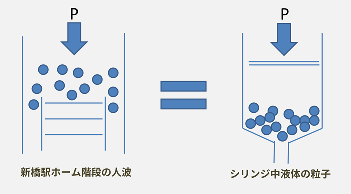

細胞成長の物理学的法則
筆者は，2012年ごろから，管の数理を研究してきた．まず待ち行列理論や渋滞学の知見を応用し，シリンジ（注射器）から射出される液体にかかる圧力を，満員電車降車後の駅ホームの階段が混む原因と同じ「管の構造」（シリンジと駅ホーム）を持つ現象だと捉え，そうしてつかまえた管の中を流れる流体の数理を今度は血管に応用し，冷え性や硬化の改善方法や，むくみやデトックスの仕組みを研究した．まずその成果を紹介したい．
血行とは血流と血圧の積である．血圧が高くなっても血流がよくなっても血行は高まる．ただし，血行はどこまでも上昇する値ではない．ある程度流れがよくなれば，それ以上速まることはない．血行が過度に速まると心拍が追いつけず，心臓に過度の運動を負担させるためである．走っているとき血行がとても速くなると，気持ちが悪くなって倒れることがある．それでも心臓を通常の心拍数で動かしつつ血圧や血流を上げる方法がある．
血管の（管としての）体積＝管の長さ2×血液の濃度×血液の粘度（どろどろだと高くさらさらだと低い）
血圧を上げるには管の体積を減らすとよい．温度を一定にしたまま管の体積を減らすには，塩分を摂ればよい．塩分は濃いほど細胞の体積を減らすので，管を縮ませ，伸縮する余裕がなくなっていき，硬くなる．血管の硬化である．血流を上げるには粘度を下げるとよい．濃度が低いことは血液の成分が少ないことを意味するが，粘度が低ければ患部の要所に応急的に成分が運ばれるため，濃度が高く粘度が低い血液が理想的である．
濃さやどろどろさは管の体積に依存する量でもある．管が広いと，血液は同じ濃さやどろどろさでも，管が狭いより問題が起きにくい．逆に，成分が薄くてさらさらしていても，管が細いとくらくらするだろう．成分が薄くてくらくらするのも，どろどろしていて急に倒れるのも，これで道理がつくと思う．
血管の流量＝管の長さ×束度（管がどのくらい密集しているか）×摩擦数（液体中の成分がどれくらい管に接するか）×疎度（どれくらいの管が空いているか）
3本の支流に分かれている個所は，2本に分岐している点よりも束度は大きい．3本のうち1本に栓ができて詰まっているところは，2本とも通りが良いところより疎度が小さい．摩擦数が大きいところは反応がじんわりと広がりやすく流量が大きい．なお，流量λは液の速さvと液の周期Tとの積でもある．不整脈のときは周期Tが変動しやすいため，流量が一定でなく流量分布が偏りやすい．
摩擦数は，べたべたした成分が濃いほど小さい．管が密集しているところでは流量が大きく，管に接する回数が大きいほど一般に流量が大きく，管が空いているほどより多くの流量を通せる．べっとりと管にへばりつく成分は，管に接する数を抑えるため，流量を減らす．管の体積が大きければ，流量が少なくても多くの液を流せる．管の圧力を下げて管の体積を大きくすれば流量は増える．血圧を下げると流れの滞りが和らぐわけである．
外部から異物が侵入したとき，一部を腫れさせて体積を増やし，体温を少し上げる．体積が増えたところに異物を集めるためにめぐりをよくし，その個所に異物を代謝する成分を作って運ぶことで，かぜのとき腫らせた個所で異物が集中的に分解される．一般にデトックスするときは身体の一部の体積を増やしたり身体を温めたりして異物を分解させる．
以上の2式の考察の上で，もうひとつの式である管の体積に関する式を，細胞の体積の式として横展開することができる．細胞の体積の式として解釈すると以下のようになる．この式が本稿の主題である．
細胞体積（「管」の体積）＝温度×距離×振動数 / 圧力×速度
この式より，細胞が大きくなる条件は以下の5つである．
1.温度：気温が高いほど細胞は大きくなる
北海道やロシアのように，気温が低い地域の樹木は細い針葉樹であり，熱帯地域など，暖かい地域の幹は太い広葉樹である．また，夏に生育期がある植物のほうが，冬を成長期とする植物より，成体が大きい．夏が高温な年のほうが，夏が低温の年より，コメが大粒に育つ．
2.圧力：気圧が低いほど細胞は大きくなる
状態方程式から，気温が高いほど気圧が低い．細胞は気圧が低いことに耐えにくいので，高温環境の場合には，細胞圧を下げる代わりに細胞体積を大きくして凌ぐのだ．細胞が大きくなることは，細胞圧が低い制限的環境に置かれたことで，細胞が細胞自身を守るための現象でもある．
3.距離：間の距離が長いほど細胞は大きくなる
成体がやせているほど，管間の距離は短い．細い脚に含まれている管の間は太い脚に含まれている管の間の距離より小さい．植率の高い地域の幹は幹同士の距離が短いので細く，幹同士が距離をとって生えている地域の植率は低いが太い幹が育っている．これを植物を植えるときに考慮すれば間引きが少なくて済む．
4.速度：ゆっくりであるほど細胞は大きくなる
促成栽培では大きく育たない．これは，成長を速めようとするからである．子供の成長を考えても，生物は時間をかけるほど大きくなるように見える．しかし本当は，ゆっくりであるほど大きくなる．生化学反応量の最大化を連想させる．マイペースに育ったほうが大きく育つのは，神経細胞についてもおそらく同様である．
5.振動数：ぶるぶるふるえるほど細胞は大きくなる
運動で管の体積が増える理由は，体温が上がるためだけでなく，管が揺れるためでもある．ふるえることでエネルギーを消費し温まるが，揺れること自体に新しく体積を増す効果がある．風が強い地域は振動数が大きいので枝が伸び，風が少ない地域は短い樹木に育つ．柳の木や乳房やバスケ部の生徒も同じである．
以上，細胞の成長について3つの式を通して考察した．野菜の場合なら収量を体積ベースで計算でき，植物工場を設計するときにも役立つ法則だろうし，子供や作物を大きく育てたい時は，何をすればよいかわかってくるはずだ．すでに大きくする方法を知っていた人も，断片的な知識が整理され，面白く読んでくださったとするならば，筆者はとてもうれしい．